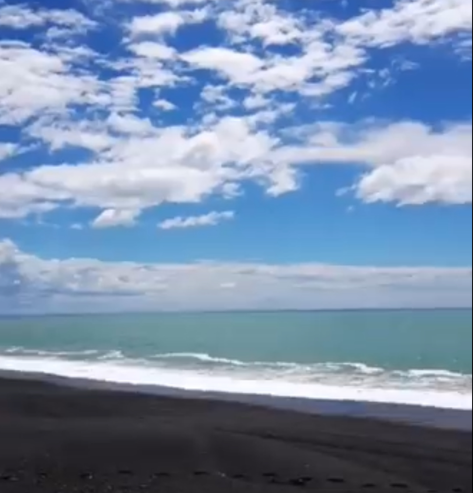
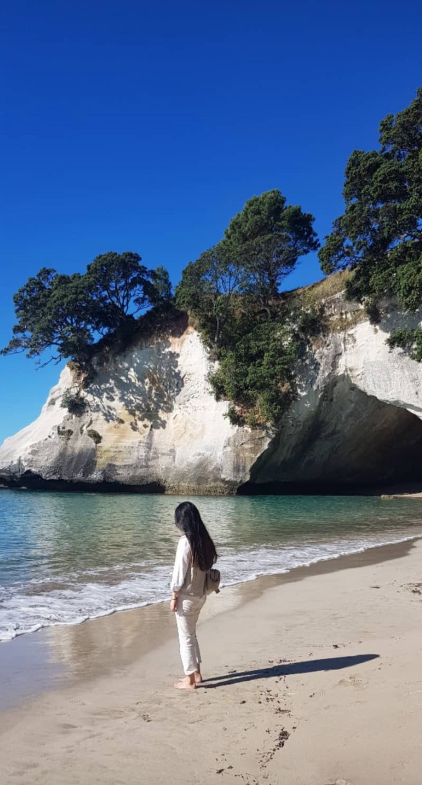
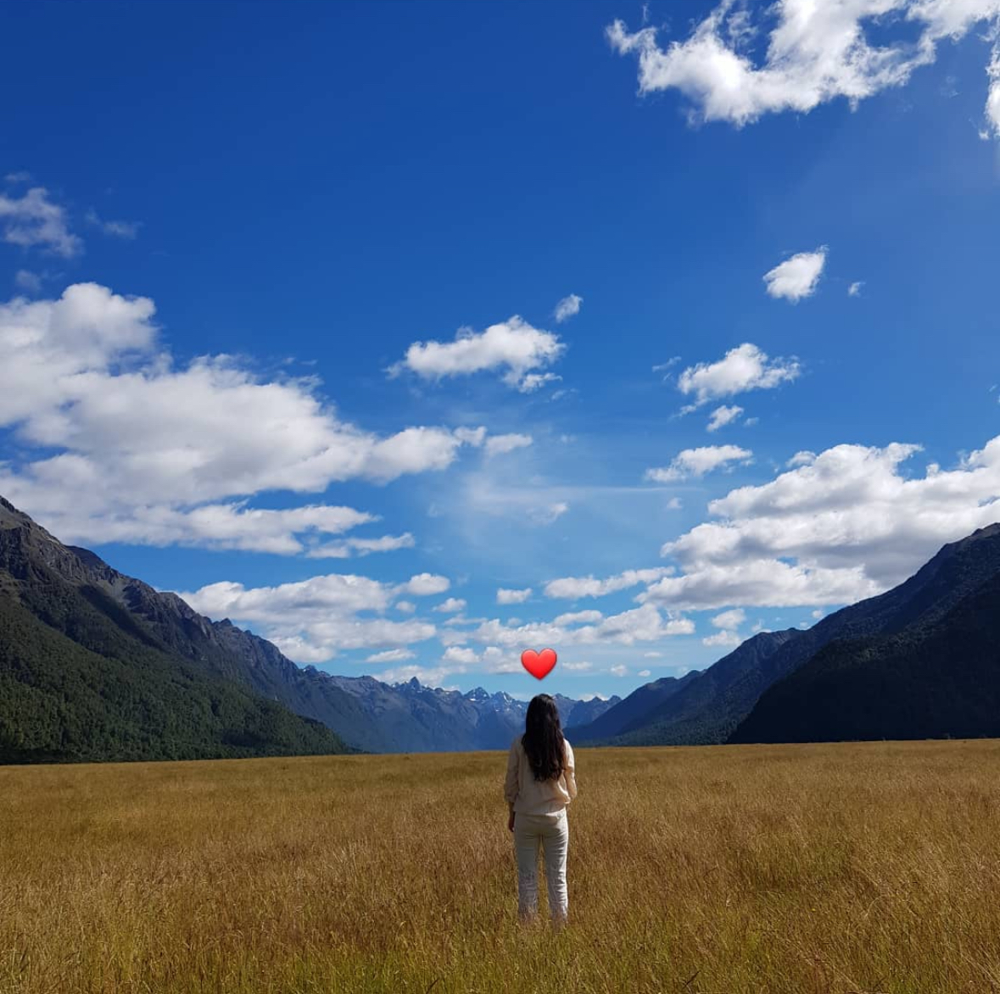
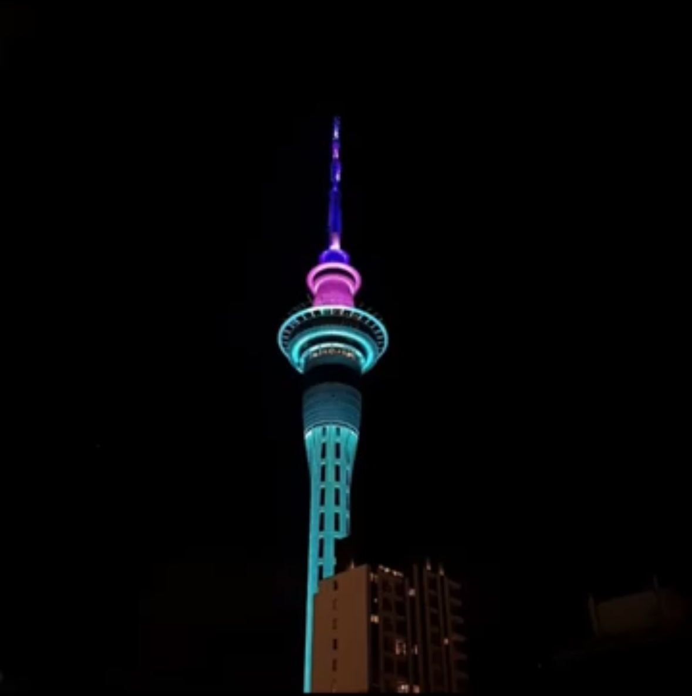
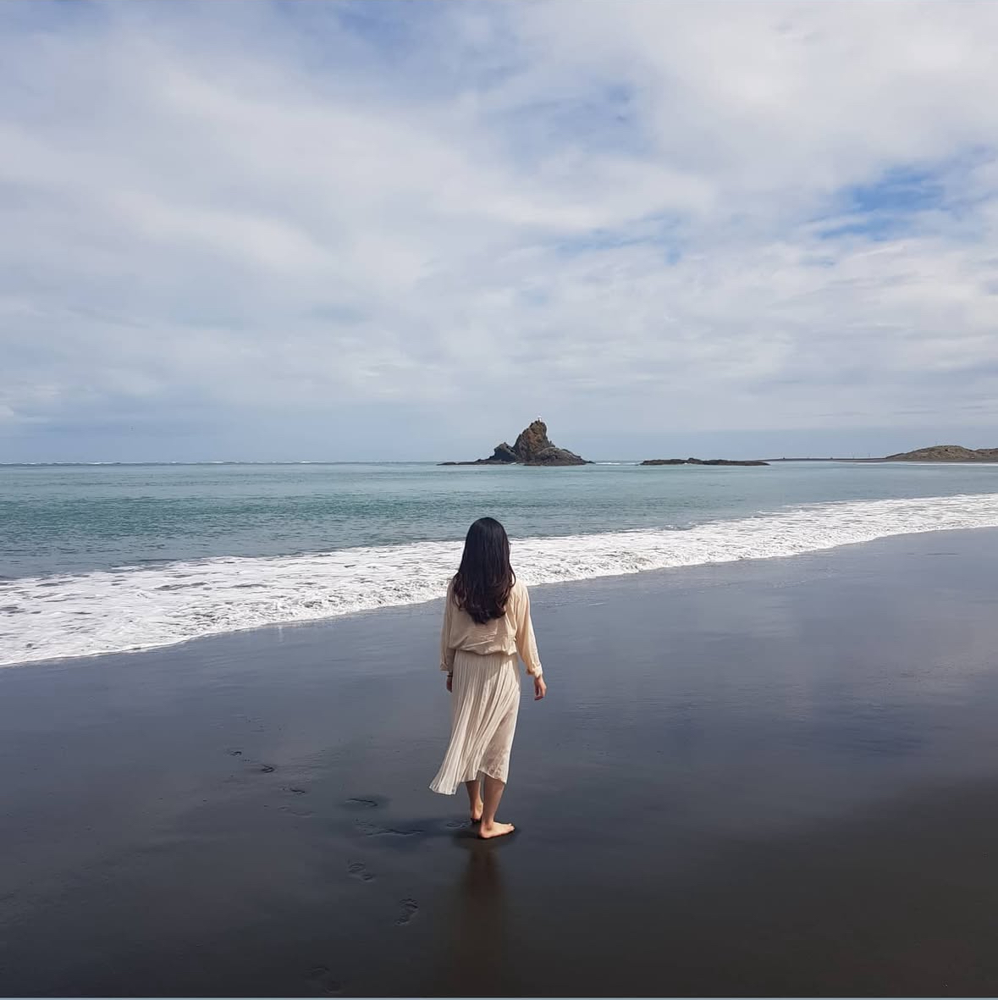
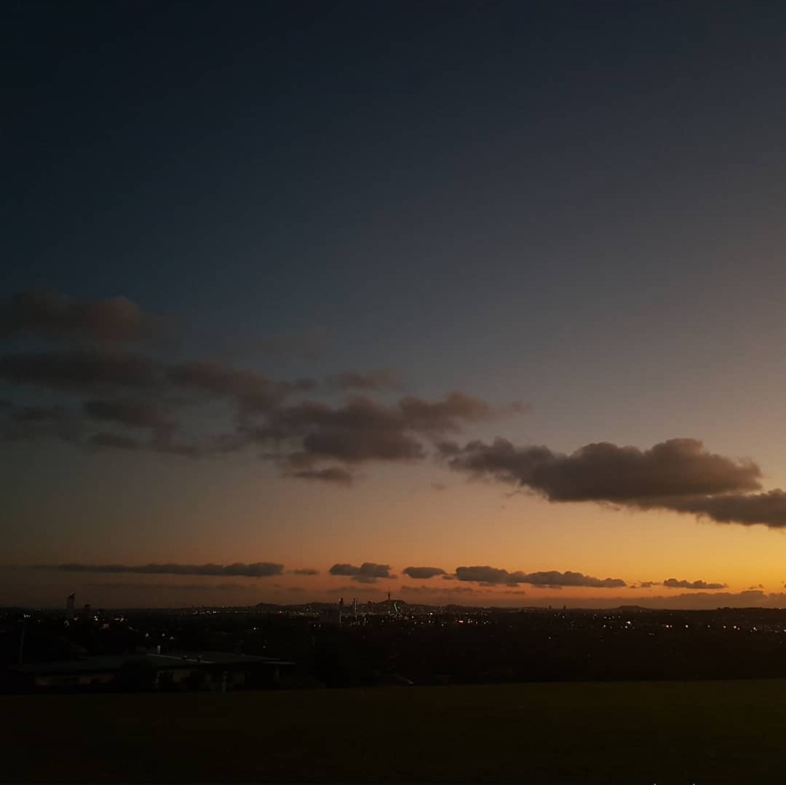
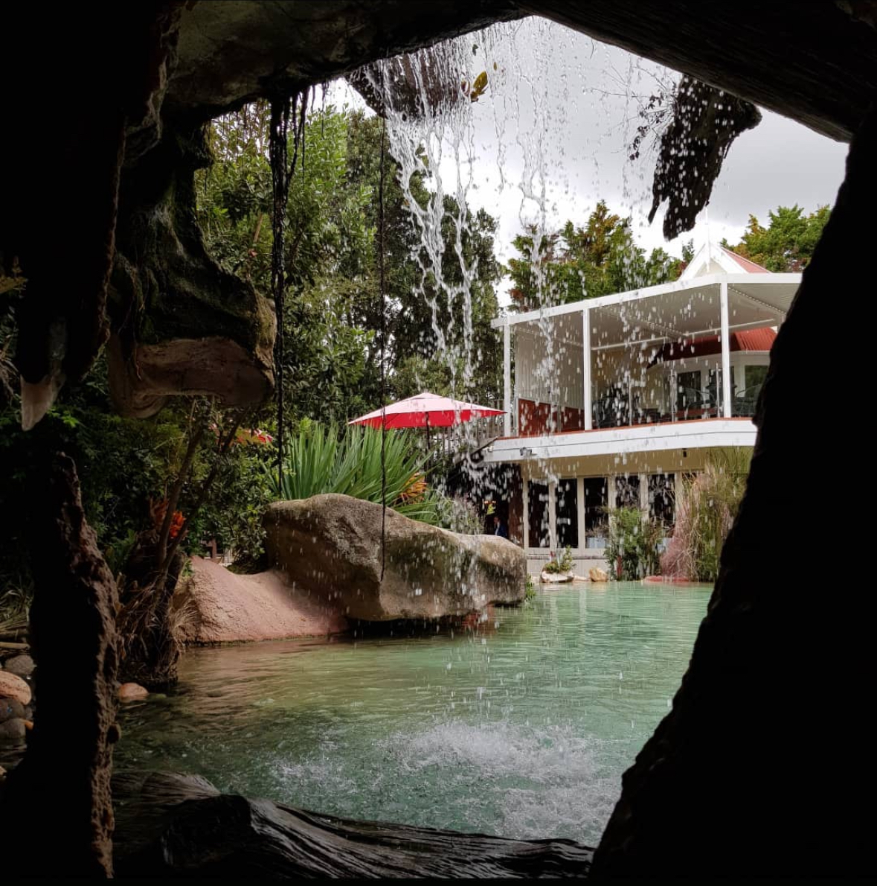

내가 좋아하는 장소








안녕하세요 ! 저는 다양한 경험과 새로운 사람들 만나는 것을 좋아하는 이든입니다. 해보지 못한 여러가지 것들을 경험해보는 것을 좋아해요.
타인의 꿈에 들어가 생각을 훔치는 특수 보안요원 코브. 그를 이용해 라이벌 기업의 정보를 빼내고자 하는 사이토는 코브에게 생각을 훔치는 것이 아닌, 생각을 심는 ‘인셉션’ 작전을 제안한다. 성공 조건으로 국제적인 수배자가 되어있는 코브의 신분을 바꿔주겠다는 거부할 수 없는 제안을 하고, 사랑하는 아이들에게 돌아가기 위해 그 제안을 받아들인다. 최강의 팀을 구성, 표적인 피셔에게 접근해서 ‘인셉션’ 작전을 실행하지만 예기치 못한 사건들과 마주하게 되는데… 꿈 VS 현실 시간, 규칙, 타이밍 모든 것이 완벽해야만 하는, 단 한 번도 성공한 적 없는 ‘인셉션’ 작전이 시작된다!
"인셉션"은 단순한 SF 영화가 아니라, 우리의 내면과 감정을 깊이 들여다보게 만드는 작품입니다. 꿈과 현실의 경계를 넘나드는 이 영화는, 주인공 도미닉 코브가 '꿈 침투'라는 직업을 통해 상실과 죄책감에 사로잡힌 채 살아가는 이야기를 그립니다. 그는 꿈 속에서 잃어버린 사랑과 아픔을 잊지 못하고, 그로 인해 계속해서 고통받고 있습니다. 이 영화가 나를 울린 이유는, 화려한 액션이나 복잡한 플롯 때문이 아니라, 그 안에 담긴 깊은 감정의 이야기가 나와 맞닿았기 때문입니다. 코브의 여정을 따라가며, 나는 우리가 삶에서 겪는 후회와 아픔, 그리고 그것을 극복하려는 노력에 대해 다시 한 번 생각하게 되었습니다. "인셉션"은 꿈과 현실이 뒤섞인 세계 속에서, 우리가 믿는 것들이 얼마나 불확실할 수 있는지, 그리고 진정한 '현실'을 찾으려는 끝없는 여정을 보여줍니다. 영화의 마지막 장면에서 등장하는 '팽이'는 그 상징적인 의미로, 무엇이 진짜인지 알 수 없는 불확실성을 떠올리게 합니다. 결국, "인셉션"은 현실을 넘어서, 우리 각자가 가진 상처와 그 상처를 치유하려는 여정을 그린, 감동적이고 철학적인 영화입니다.
“오 캡틴, 나의 캡틴” 미국 입시 명문고 웰튼 아카데미, 공부가 인생의 전부인 학생들이 아이비 리그로 가기 위해 고군분투하는 곳. 새로 부임한 영어 교사 ‘존 키팅’은 자신을 선생님이 아닌 “오, 캡틴, 나의 캡틴”이라 불러도 좋다고 말하며 독특한 수업 방식으로 학생들에게 충격을 안겨 준다. 점차 그를 따르게 된 학생들은 공부보다 중요한 인생의 의미를 하나씩 알아가고 새로운 도전을 시작한다. 하지만 이를 위기로 여긴 다른 어른들은 이들의 용기 있는 도전을 시간 낭비와 반항으로 단정지으며 그 책임을 ‘키팅’ 선생님에게 전가하는데...